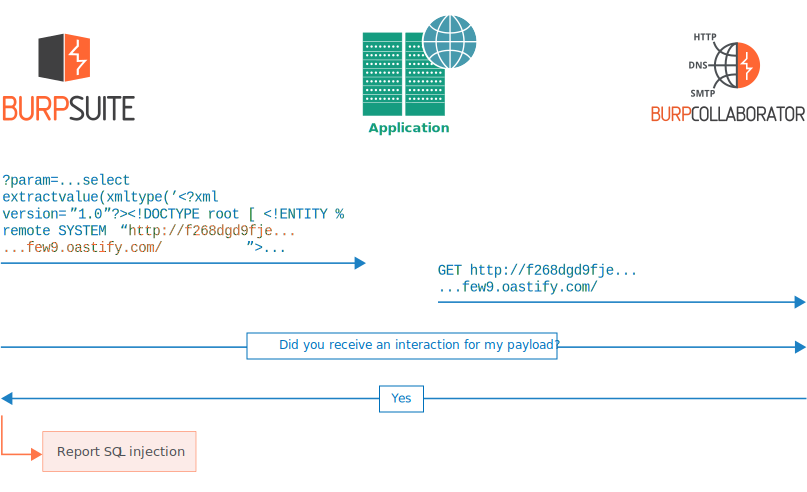

Burp Collaborator
このセクションでは、Burp Collaboratorとは、Burp Collaboratorの仕組み、Burp Collaboratorデータのセキュリティ、Burp Collaboratorの選択肢についての説明します。
Burp Collaboratorとは？
Burp Collaboratorは、Burpが多くの脆弱性を発見するのに役立つネットワークサービスです。例:
-
一部のインジェクション系の脆弱性は、インジェクションが成功した際に外部システムとの通信が発生するようなペイロードを使って検出できます。たとえば、一部のブラインドSQLインジェクションで、アプリケーションのレスポンスの内容やタイミングに差異を引き起こせなくなくても、外部システムと通信するペイロードをSQLクエリ内に使って検出できます。
-
一部のサービス固有の脆弱性を検出するには、そのサービス用のペイロードを対象アプリケーションに送信し、そのサービスと連携するインスタンスとの通信を詳細に分析します。たとえば、メールヘッダインジェクションはこの方法で検出できます。
-
一部の脆弱性は、外部のシステムからコンテンツを取得しそれに何らかの処理を行わせるようアプリケーションを誘導できる場合に発生します。たとえば、指定されたURLのコンテンツをアプリケーションが取得し、それを自身のレスポンスに含める場合などです。
Burp Collaboratorを使用すると、Collaborationサーバとの通信を引き起こすように設計されたペイロードが、アプリケーションに送信されます。通信が発生したか確認するために、BurpはCollaboratorサーバに定期的にアクセスします:
Burp Collaboratorは、Burp Scannerや手動のBurp Collaboratorクライアントで使用され、Burp拡張APIからも使用できます。
Burp Collaboratorのしくみ
Burp Collaboratorは単一のサーバとして動作し、さまざまなネットワークサービスのカスタム実装を提供します:
-
独自の専用ドメイン名を使用し、そのドメインの権威DNSサーバとして登録されています。
-
登録済みのドメイン(またはサブドメイン)のすべての名前解決に対して、自身のIPアドレスを返すDNSサービスを提供します。
-
HTTP/HTTPSサービスを提供し、そのドメイン名に対し、CAが署名した有効なワイルドカードTLS証明書を使用しています。
-
SMTP/SMTPSサービスを提供します。
以下は、Burp Collaboratorで検出できる問題の例です。
外部サービスとの通信を検知
典型的な外部サービスとの通信を、次のように検出できます:
-
Burpは、Collaboratorドメイン上のランダムなサブドメインを使ったURLを含むペイロードを、アプリケーションに送ります。例:
param=http://f294gchg2la...r9gf.oastify.com/
-
プログラムの(意図した、または意図しない)挙動によって、アプリケーションがそのURLのコンテンツを取得しようとします。すると、まずランダムなサブドメインのDNS名前解決が発生し、その後HTTPリクエストが発生するはずです。
-
DNS名前解決とHTTPリクエストは、Collaboratorサーバによって受け取られます。いずれの通信も、Collaboratorのサブドメインとしてランダムデータが含まれます。
-
BurpはCollaboratorサーバをポーリングし、「私のペイロードに関する通信を受信しましたか？」と尋ねると、Collaboratorサーバは通信の詳細を返します。
-
Burpは、Collaboratorサーバでキャプチャしたすべての通信メッセージを含む、外部サービスとの通信をユーザに報告します。
注
WAFのブラックリストによる誤検出を減らすため、公開されているCollaboratorサーバに定期的に新しいドメイン名を追加しています。Burp CollaboratorクライアントやBurp Scannerは、Burp Suite Professionalがリリースされた時点で利用可能な最新の公開Collaboratorドメインをデフォルトで使用します。現時点では、burpcollaborator.netかoastify.comのどちらかになる予定です。
Burp Collaboratorが最大限の効果を発揮できるよう、Burp ScannerやBurp Collaboratorクライアントを実行しているマシンが、これらの両方のドメインにポート80と443でアクセスできるようにしてください。
帯域外リソース読み込みの検知
帯域外リソースの読み込みは、アプリケーションが外部ソースからコンテンツを読み込むよう誘導し、それが自身のレスポンスに含まれる場合に起こります。Burp Suiteは、外部通信に対する特定のデータをCollaboratorサーバに返させ、同じデータに対するアプリケーションの対域内レスポンスを分析して、この問題を検出できます。
ブラインドSQLインジェクションの検出
完全にブラインドなインジェクション系脆弱性を検出するために、インジェクションが成功した場合に外部への通信が発生するよう設計されたインジェクションベースのペイロードを、Burpが送信できます。次の例では、Oracle固有のAPIを使用して、SQL文に正常に挿入された場合に通信を発生させています:

ブラインドクロスサイトスクリプティングの検出
対象にペイロードを送信した通信内ではなく、それに続いて後で非同期に発生する遅れた影響を、Collaboratorサーバは検知してBurpに通知できます。これにより、セカンドオーダーSQLインジェクションやブラインドXSSなど、さまざまな蓄積型脆弱性の検出が可能になります。次の例では、いつかユーザにレンダリングされた場合にCollaborサーバとの通信が発生するよう設計された、蓄積型XSSのペイロードをBurp Suiteが送信しています。その後、管理者ユーザがペイロードを表示すると、そのブラウザが通信を実行します。そして、Burp SuiteはCollaboratorサーバをポーリングし、その通信の詳細を受取、蓄積型XSS脆弱性を報告します:
Collaboratorデータのセキュリティ
Collaboratorサーバで処理されるデータのセキュリティに関してユーザが懸念を持つのは当然で、データのセキュリティを重視して機能を設計しています。
Collaboratorサーバはどのようなデータを格納しているのか？
ほとんどの場合脆弱性が見つかっても、Collaboratorサーバは脆弱性に関する十分な情報を受信しません。Burpから対象アプリケーションに送信されたHTTPリクエストは見られません。典型的な場合では、どこから通信を受け取ったのかと、Burpによって生成されたランダムな識別子を含む通信内容を記録します。場合によって、たとえばユーザ登録フォームを経由して生成されたメールの内容など、アプリケーション固有のデータをCollaboratorサーバが受け取ります。
Collaboratorデータの取得はどのように制御されているのか？
Burp Collaborator機能は、特定のペイロードを生成したBurpのインスタンスのみが、そのペイロードに起因する通信の詳細を取得できるように設計されています。この要件は次のように実装されています:
-
Burpの各インスタンスは、乱数のシークレットを安全に生成します。
-
Burpが対象アプリケーションに送信するCollaborator関連の各ペイロードには、シークレットから一方向ハッシュ(暗号学的ハッシュ関数)で算出されるランダムな識別子が含まれます。
-
Collaboratorとのすべての通信結果には、送信データ(たとえば、サブドメインのDNS名前解決やHTTPリクエストのホスト名など)にこの識別子が含まれます。
-
シークレットは、通信結果の詳細をポーリングするために、BurpからCollaboratorサーバに対してだけ送信されます。これはBurpのオプションで上書きしない限り、HTTPSを使用しています。
-
Collaboratorサーバがポーリングリクエストを受け取ると、送信されたシークレットから一方向ハッシュを実行し、そのハッシュから算出された識別子を含むすべての通信の詳細な記録を取得します。
-
したがって、シークレットを生成したBurpインスタンスのみが、そのペイロードが引き起こした通信の詳細を取得できます。
このメカニズムでは、さらにCollaboratorサーバのデータを不正アクセスから守るために次の予防措置を実装しています:
-
通信の詳細は、一時的なプロセスメモリのみに格納されます。
-
あらゆる種類の永続的な記録領域にデータはありません: たとえば、データベースやログファイルなど
-
通常、通信が発生した直後にBurpによって通信の詳細が取得され、その後サーバで破棄されます。
-
Burpが取得しに来ない古い通信の詳細は、一定期間後破棄されます。
-
通信の詳細を表示するための管理者機能はなく、既に説明した検索メカニズムしかありません。
-
Collaboratorサーバは、Burpユーザを特定するあらゆるデータ(アカウント名やライセンスキーなど)を受け取らないよう設計されています。
Collaboratorベースの電子メールアドレス
パブリックCollaboratorサーバを使用している場合は、Collaboratorベースの電子メールアドレスのWebサイトへの登録は推奨しません。
二つのクライアントの識別子を含んだ単一のメッセージを、Collaboratorサーバが受け取った場合、このメッセージは両方のクライアントで利用できます。つまり、あなたがパブリックCollaboratorサーバの電子メールアドレスをWebサイトに登録し、攻撃者がコントロールできるデータが電子メール内に配置されてしまう問題がそのサイトにあった場合、攻撃者が自分自身のCollaboratorクライアントを使って電子メールを取得できる可能性があります。
これを完全に防ぐには、プライベートCollaboratorサーバによってポーリングインタフェースを安全にする必要があります。
Burp Collaboratorの選択
Burpユーザは、次の三つの選択肢から選択してBurp Collaboratorを使用できます:
-
公開Collaboratorサーバ - これはPortSwiggerが提供するサーバで、すべてのBurpユーザが共同で使用します。もし公開Collaboratorサーバの停止や不具合があると、BurpのCollaboratorに関連する機能の有効性が失われる可能性があります。そのため、PortSwiggerはこのサーバのパフォーマンスまたは可用性について保証しません。
-
プライベートCollaboratorサーバ - Burp Suite Professionalライセンスを持つユーザは、独自のCollaboratorサーバのインスタンスを実行できます。これを最大限生かすには、ホストサーバ、専用のドメイン名、CAに署名された有効なワイルドカードTLS証明書が必要です。適切なドメイン名またはTLS証明書を持たないプライベートCollaboratorサーバは、BurpのCollaborator関連機能をすべてではなく、一部のみをサポートします。ネットワーク層でプライベートCollaboratorインスタンスを保護できます: 通信の受信とポーリングリクエストの応答に異なるネットワークインタフェースを使うよう設定でき、対象とテスト者の位置に応じて好きにIP制限を適用できます。プライベートCollaboratorサーバを使用する選択肢は、ペネトレーションテスト企業や社内のセキュリティチームにアピールできます。インターネットアクセスがない専用の閉じたネットワーク上でのテスト時に、テスト者個別のCollaboratorインスタンスを用意する場合にも有効です。詳細は、プライベートCollaboratorサーバの配備を参照してください。
-
Collaboratorサーバなし - BurpがCollaborationサーバを使わないよう設定します。これを選択すると、BurpのCollaborator関連機能はいずれも有効になりません。
注
Burp Collaboratorの機能は、慎重に検討しないと問題が起こる場合があります。Burp Collaboratorの機能と代替手段を完全に理解し、利用による自分自身や組織への影響を考慮しておく必要があります。
Burp Suite Professionalでは、 Burp Collaboratorサーバオプションでこれらを設定できます。